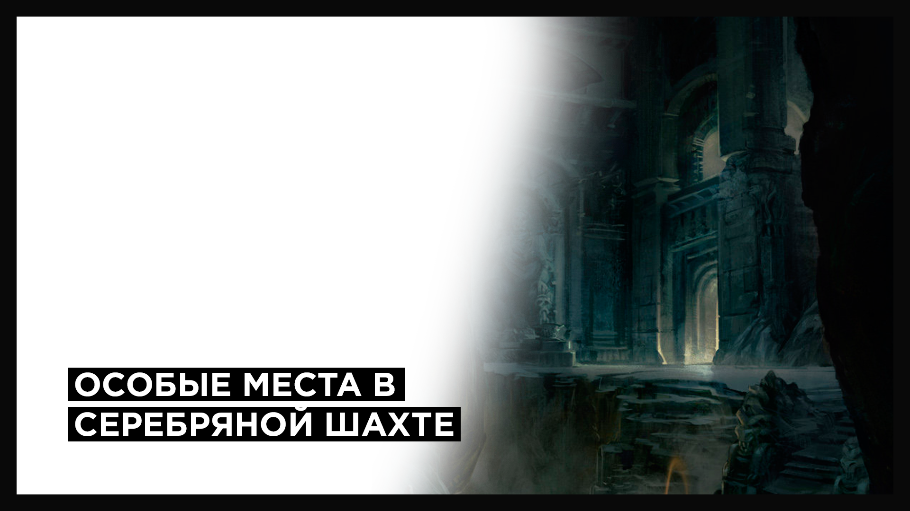

Отряд, находящийся в захваченной области, может исследовать ее. В процессе исследования увеличивается % территории области, находящейся под контролем и, соответственно, растет доход с области. Также в процессе исследования отряд может открывать особые места самого различного вида: Логова – охраняемые сокровища с рудой и древними вещами, Рудники – приносят дополнительную руду, Монументы – повышают характеристики существ, Жилища – увеличивают количество существ для найма, и различные объекты особого назначения, влияющие на те или иные параметры шахты. Максимальная исследованность области равна 100%.
— Из Путеводителя по игре.
Памятка будет периодически дополняться (новыми логовами, логами боёв, советами по тактике). Если у Вас есть информация, которая сделает её более информативной — напишите, пожалуйста, на игровую почту персонажа Смерть.
| П/П | Название логова | Охрана (количество) | Награда | Лог боя |
|---|---|---|---|---|
| 1 | Бродячая нежить | Древний зомби (3), Скелет-стражник (2). | — | — |
| 2 | Черепаший берег | Гигантская черепаха (6). | 396 руды | Ссылка |
| 3 | Склеп вампиров | Зомби (4), Вампир (3), Старший вампир (2). | 255 руды | Ссылка |
| 4 | Гнездо на утесе | Грифон (3). | 578 руды | Ссылка |
| 5 | Лесная ложбина | Паук (5), Вепрь (5). | 215 руды | Ссылка |
| 6 | Пещера с костями | Черный медведь (1). | 435-479 руды | Ссылка |
| 7 | Одинокая могила | Скелет (1). Имеет 11 уровень. | 215 руды | Ссылка |
| 8 | Беспокойное кладбище | Скелет(4), Зомби (3), Вампир (3). | 176 руды | Ссылка |
| 9 | Старый идол | Скелет-стражник (1). Очень много защиты. | 330 руды | Ссылка |
| 10 | Паучье гнездо | Паук (30). Мало ХП, быстро бьют. | 525 руды | Ссылка |
| 11 | Паук-камнеед | Черный паук (1). 3к ХП, иммунитет к физическому урону. | 473 руды | Ссылка |
| 12 | Заброшенная шахта | Огненная стена (3), Огонь глубин (1). | 360 руды | — |
| 13 | Зеленые руины | Бритволистый ядострел (1). | 280 | — |
| 14 | Огненный колодец | Огненная стена(5), Шахтный бес (8). | — | — |
| 15 | Старая берлога | Медведь (1). Имеет большой урон и атаку. | — | — |
| 16 | Старые катакомбы | Хранитель подземелий (5). | — | Ссылка |
| 17 | Аванпост нежити | Зомби (4), Скелет-лучник (7). | — | Ссылка |
| 18 | Проклятый колодец | Наваждение (9). | — | Ссылка |
| 19 | Змеиное гнездо | Гигантская кобра (5). | — | Ссылка |
| 20 | Форпост нежити | Скелет-стражник (5), Скелет-лучник (8). | — | Ссылка |
| 21 | Призрачное ущелье | Черный паук (1), Проклятье (6). | — | Ссылка |
| 22 | Волчья пещера | Волк (5), Матерый волк (2). | 270 руды | Ссылка |
| 23 | Алтарь демонов | Ужас глубин (2), Огонь глубин (5). | 261 руда | Ссылка |
Использованные источники: КС Отшельники, Игровой форум.